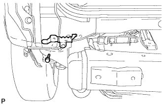
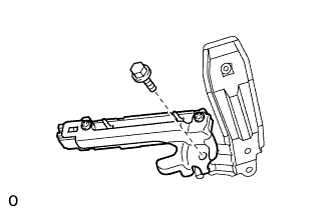

ЗАДНИЙ БАМПЕР > СНЯТИЕ |
| 1. СНИМИТЕ ПОВОРОТНЫЙ БУКСИРНЫЙ КРЮК В СБОРЕ (для моделей с поворотным буксирным крюком) |
Снимите запасное колесо (для автомобилей с запасным колесом, закрепленным на днище кузова).
Отверните 4 гайки.
Выверните 4 болта и снимите буксирный крюк.
| 2. СНИМИТЕ КРЫШКУ ОТВЕРСТИЯ ЯЩИКА ДЛЯ ДОМКРАТА |
С помощью отвертки освободите 2 захвата и снимите крышку отверстия ящика для домкрата.
| *1 | Защитная клейкая лента |
| 3. СНИМИТЕ ПЛАСТИНУ БУФЕРНОГО БРУСА ЗАДНЕГО БАМПЕРА |
Наклейте защитную ленту вокруг пластины буферного бруса заднего бампера.
Освободите 14 захватов и снимите пластину буферного бруса заднего бампера.
| *1 | Защитная клейкая лента | - | - |
| 4. СНИМИТЕ ОГРАНИЧИТЕЛЬ ОТКРЫВАНИЯ ДВЕРИ БАГАЖНОГО ОТДЕЛЕНИЯ |
 |
Выверните 2 болта
С помощью съемника фиксаторов освободите фиксатор и снимите ограничитель открывания двери багажного отделения с нижним кронштейном крепления амортизатора двери багажного отделения.
 |
Освободите зажим жгута проводов.
Выверните 3 болта и снимите ограничитель открывания двери багажного отделения с нижним кронштейном крепления амортизатора двери багажного отделения.
| 5. СНИМИТЕ ПЛАСТИНУ ЗАДНЕГО БАМПЕРА № 1 |
Наклейте защитную ленту вокруг пластины заднего бампера № 1.
С помощью отвертки освободите 10 захвата и 10 направляющих и снимите пластину заднего бампера № 1.
| *1 | Защитная клейкая лента | - | - |
| 6. СНИМИТЕ БРЫЗГОВИК ЛЕВОЙ ЗАДНЕЙ БОКОВОЙ ПАНЕЛИ |
 |
Выверните 5 винта и освободите 2 фиксатора.
Снимите брызговик задней боковой панели.
| 7. СНИМИТЕ БРЫЗГОВИК ПРАВОЙ ЗАДНЕЙ БОКОВОЙ ПАНЕЛИ |
| 8. СНИМИТЕ ОБЛИЦОВКУ ЗАДНЕГО БАМПЕРА (для 5-дверных моделей) |
Наклейте защитную ленту вокруг накладки заднего бампера.
Освободите 2 фиксатора и выверните 6 болтов.
Освободите 14 захватов.
Для моделей с сенсорной системой помощи при парковке TOYOTA и задними противотуманными фонарями:
Отсоедините 4 разъема.
Для моделей с сенсорной системой помощи при парковке TOYOTA без задних противотуманных фонарей:
Отсоедините 2 разъема.
Для моделей без сенсорной системы помощи при парковке TOYOTA и с задними противотуманными фонарями:
Отсоедините 2 разъема.
Снимите облицовку заднего бампера.
| *1 | Защитная клейкая лента | - | - |
| 9. СНИМИТЕ ОБЛИЦОВКУ ЗАДНЕГО БАМПЕРА (для 3-дверных моделей) |
Наклейте защитную ленту вокруг накладки заднего бампера.
Освободите 2 фиксатора и выверните 7 болтов.
Освободите 10 захватов.
Для моделей с сенсорной системой помощи при парковке TOYOTA и задними противотуманными фонарями:
Отсоедините 4 разъема.
Для моделей с сенсорной системой помощи при парковке TOYOTA без задних противотуманных фонарей:
Отсоедините 2 разъема.
Для моделей без сенсорной системы помощи при парковке TOYOTA и с задними противотуманными фонарями:
Отсоедините 2 разъема.
Снимите облицовку заднего бампера.
| *1 | Защитная клейкая лента | - | - |
| 10. СНИМИТЕ БОКОВУЮ ОПОРУ ЗАДНЕГО БАМПЕРА № 3 |
Выверните винт и снимите боковую опору заднего бампера № 3.
| 11. СНИМИТЕ ЛЕВУЮ БОКОВУЮ ОПОРУ ЗАДНЕГО БАМПЕРА |
Выверните 3 винта.
С помощью съемника фиксаторов освободите 4 захвата и снимите боковую опору заднего бампера.
| *1 | Защитная клейкая лента | - | - |
| 12. СНИМИТЕ ПРАВУЮ БОКОВУЮ ОПОРУ ЗАДНЕГО БАМПЕРА |
| 13. СНИМИТЕ ЛЕВЫЙ ОКОНЕЧНЫЙ ДЕРЖАТЕЛЬ ЗАДНЕГО БАМПЕРА (для моделей с оконечным держателем заднего бампера) |
Выверните винт и снимите оконечный держатель заднего бампера.
| 14. СНИМИТЕ ПРАВЫЙ ОКОНЕЧНЫЙ ДЕРЖАТЕЛЬ ЗАДНЕГО БАМПЕРА (для моделей с оконечным держателем заднего бампера) |
| 15. СНИМИТЕ УСИЛЕНИЕ ЛЕВОГО БУФЕРНОГО БРУСА ЗАДНЕГО БАМПЕРА |
Выверните 3 болта и снимите усиление буферного бруса заднего бампера.
| 16. СНИМИТЕ УСИЛЕНИЕ ПРАВОГО БУФЕРНОГО БРУСА ЗАДНЕГО БАМПЕРА |
| 17. СНИМИТЕ ПРАВЫЙ ЗАДНИЙ БЛОК ФОНАРЕЙ В СБОРЕ |
Выверните 2 болта.
Освободите фиксатор и 2 захвата и снимите фонарь.
Отсоедините разъем.
| 18. СНИМИТЕ ЛЕВЫЙ ЗАДНИЙ БЛОК ФОНАРЕЙ В СБОРЕ |
| 19. СНИМИТЕ ВЕРХНИЙ ЛЕВЫЙ ДЕРЖАТЕЛЬ ЗАДНЕГО БАМПЕРА |
 |
Освободите фиксатор и снимите верхний держатель заднего бампера.
| 20. СНИМИТЕ ВЕРХНИЙ ПРАВЫЙ ДЕРЖАТЕЛЬ ЗАДНЕГО БАМПЕРА |
| 21. СНИМИТЕ ЛЕВУЮ БОКОВУЮ ОПОРУ ЗАДНЕГО БАМПЕРА № 2 |
|  |
Выверните болт и снимите боковую опору заднего бампера № 2.
| 22. СНИМИТЕ ЛЕВЫЙ БОКОВОЙ КРОНШТЕЙН КРЕПЛЕНИЯ ЗАДНЕГО БАМПЕРА |
 |
Для моделей с системой посадки и запуска:
Отсоедините разъем.
Выверните болт и снимите боковой кронштейн крепления заднего бампера.
| 23. СНИМИТЕ ПРАВЫЙ БОКОВОЙ КРОНШТЕЙН КРЕПЛЕНИЯ ЗАДНЕГО БАМПЕРА |
| 24. СНИМИТЕ АНТЕННУ ЭЛЕКТРОННОГО КЛЮЧА (для моделей с системой посадки и запуска) |
|  |
Выверните болт и снимите антенну электронного ключа.